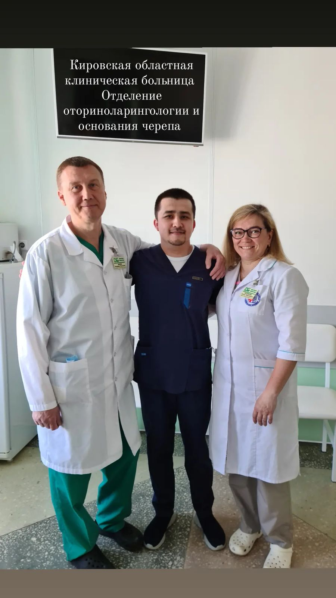
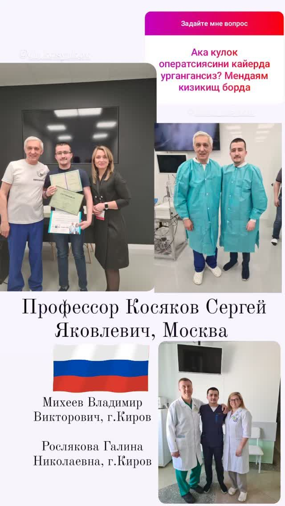
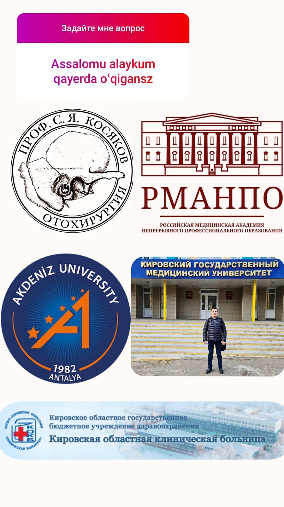
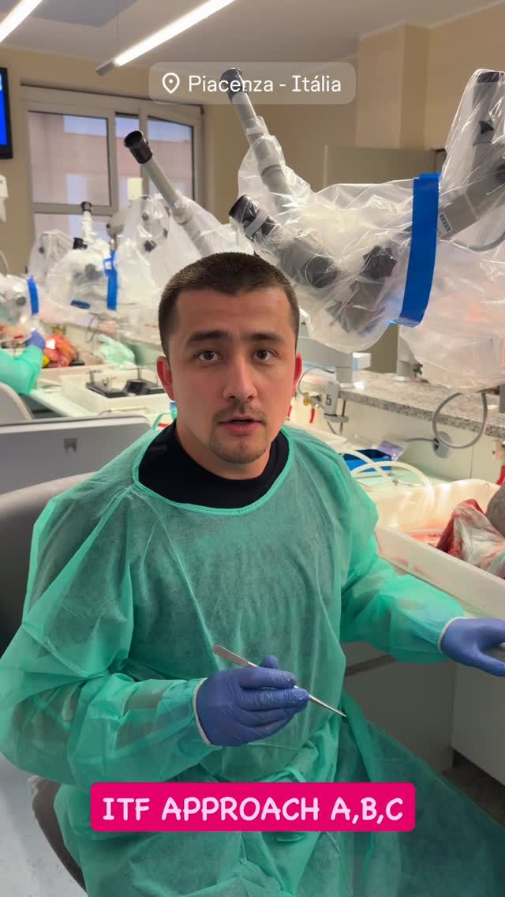
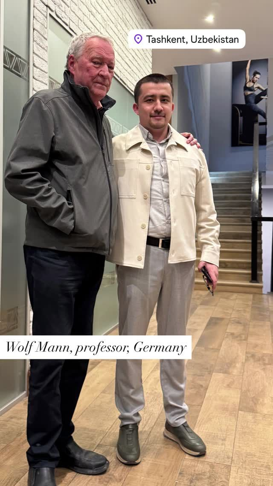

Доктор Фозилхон Усмонхонов · ЛОР-хирург, Ташкент
Операции на ухе, носе и горле в Ташкенте — для тех, кто едет издалека
Пришлите МСКТ, аудиограмму и описание жалоб в Instagram Direct или позвоните. Доктор посмотрит материалы и подскажет, есть ли смысл ехать на очный осмотр. Решение об операции принимается только после осмотра.
Путь пациента
Шесть шагов от первого сообщения до наблюдения после возвращения домой. Детали каждого шага — даты, жильё, дорогу — уточняйте при записи.
- 1
Отправьте снимки и жалобы
МСКТ, аудиограмма, заключения — в Instagram Direct или по телефону. Опишите, что беспокоит и как давно.
- 2
Предварительное мнение
Доктор смотрит материалы и говорит, нужен ли очный осмотр и какие обследования взять с собой. Это не диагноз.
- 3
Выбор дат
Согласуйте день приезда и приёма. Доктор регулярно уезжает на стажировки — даты приёма уточняйте при записи.
- 4
Приезд и осмотр
Осмотр, эндоскопия и нужные исследования в Ташкенте. Адрес и время приёма сообщают при записи.
- 5
Операция
Если операция показана — доктор объясняет её цель, ход и восстановление. Результат зависит от диагноза.
- 6
Наблюдение и связь из дома
Порядок контроля доктор объясняет при выписке. Вопросы после возвращения можно задать в Direct или по телефону.
Подготовка к поездке
Отметьте, что у вас уже есть. Список попадёт в сообщение для записи — доктор сразу увидит, каких материалов не хватает.
Клинические случаи по странам
Видео и публикации доктора о пациентах, которые приезжали в Ташкент. Материалы публикуются с согласия пациентов. Каждый случай индивидуален.
Где учился и стажируется доктор
По постам доктора: каждый месяц — обязательные стажировки за рубежом, в Европе, Индии и России. На карте выше это оранжевые линии из Ташкента.
-

Россия, Киров
Кировская областная клиническая больница, отделение оториноларингологии и хирургии основания черепа. Кировский государственный медицинский университет.
-

Россия, Москва
Стажировка в ФНКЦ оториноларингологии ФМБА России и РМАНПО у профессора С. Я. Косякова. Встреча с профессором Г. З. Пискуновым — пионером эндоскопической ринохирургии в России.
-

Турция, Анталья
Akdeniz University.
-
Австрия, Грац · июль 2026
Стажировка в школе Хайнца Штаммбергера и Мессерклингера — родине функциональной эндоскопической хирургии пазух.
-

Индия, Тричи · 1–9 августа 2026
Стажировка у Н. Джанакирама, хирурга основания черепа.
-
Турция, Стамбул · сентябрь 2026
Всемирный конгресс оториноларингологов, доклад по хирургии уха.
-

Италия, Пьяченца · 4–11 октября 2026
Школа профессора Марио Санны — хирургия основания черепа.
-

Ташкент
Визит профессора Вольфа Манна (Германия). Бренд «ЛОР – PREMIUM» — зарегистрированный товарный знак, свидетельство № MGU 57238.
Истории пациентов
Скриншоты сообщений из раздела «Отзывы» в Instagram доктора — без правок. Листайте или перетаскивайте.
Сообщение для записи
Заполните поля — текст соберётся сам. Отправьте его в Instagram Direct вместе с файлами МСКТ и аудиограммы или прочитайте по телефону.
Кнопка Instagram сначала копирует текст — вставьте его в чат и прикрепите файлы снимков.
Вопросы тех, кто едет издалека
Можно ли получить мнение до поездки?
Да, можно прислать МСКТ, аудиограмму и описание жалоб в Instagram Direct или позвонить. Предварительное мнение по снимкам не заменяет осмотр: окончательное решение принимается только после очной консультации.
Какие снимки и обследования нужны?
Зависит от жалоб. При проблемах со слухом часто нужны аудиограмма и МСКТ височных костей, при проблемах с носом — МСКТ околоносовых пазух. Точный список уточняйте при записи.
Сколько дней нужно провести в Ташкенте?
Это зависит от диагноза и объёма лечения и определяется после осмотра. Уточняйте при записи.
Помогаете ли с жильём и дорогой из аэропорта?
Эти вопросы уточняйте при записи — на сайте мы не обещаем того, что не подтверждено.
Сколько стоит операция?
Стоимость зависит от диагноза и объёма вмешательства и называется после осмотра. Уточняйте при записи.
Как проходит наблюдение после возвращения домой?
Порядок контроля доктор объясняет при выписке. Вопросы можно задать в Instagram Direct или по телефону.
Где находится клиника?
В Ташкенте. Точный адрес и время приёма сообщают при записи.